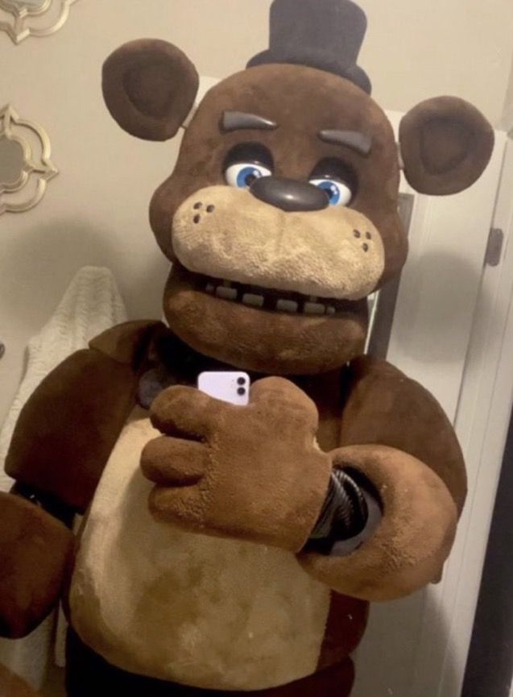
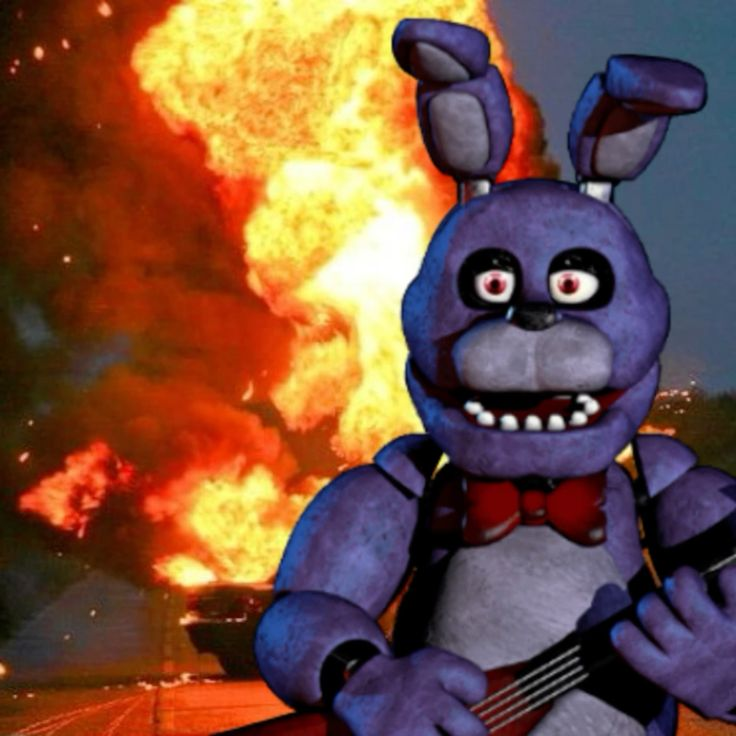
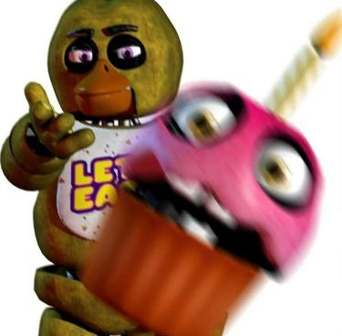
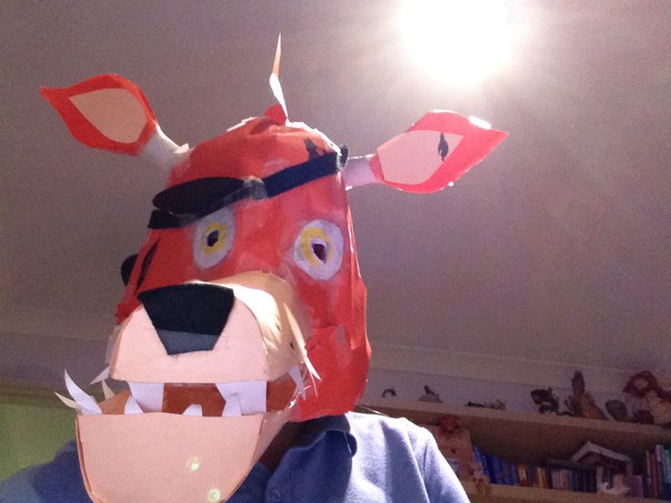

Five Nights at Freddy's
Freddy
Freddy Fazbear é o principal animatrônico da franquia. Ele é um urso animatrônico que lidera os outros animatrônicos na pizzaria.
Bonnie
Bonnie é um coelho roxo animatrônico. Ele é um dos principais antagonistas da série Five Nights at Freddy's.
Chica
Chica é um animatrônico amarelo, representando uma galinha. Ela é conhecida por sua aparência distinta e assustadora.
Foxy
Foxy é um animatrônico raposo. Ele é reconhecido por sua natureza agressiva e rápida, aparecendo como um dos antagonistas.
